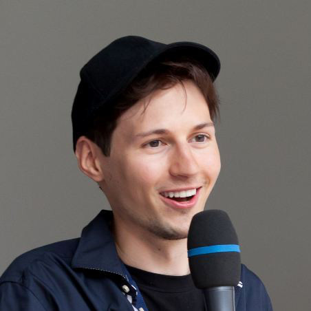

В России наша миссия выполнена
⋅Спустя год после увольнения издание LIVE Plus опубликовало первое русскоязычное инервью с Дуровым с момента увольнения, расспросив его об уроках «ВКонтакте» и планах на будущее.
Спустя год после увольнения издание LIVE Plus опубликовало первое русскоязычное инервью с Дуровым с момента увольнения, расспросив его об уроках «ВКонтакте» и планах на будущее.
В январе 2014 года стало известно, что Дуров продал всю свою долю во «ВКонтакте» (12%) гендиректору «МегаФона» Ивану Таврину. Позднее тот перепродал её Mail.Ru Group, позволив холдингу консолидировать 100% социальной сети.
В интервью LIVE Plus Дуров заявил, что не жалеет о продаже доли. По его словам, полученные от её продажи деньги (по оценке «Ведомостей», 360-480 миллионов долларов) позволили Telegram стать независимым и использовать другую модель монетизации. Дуров владеет 100% Telegram.
Павел Дуров, основатель Telegram Те 12% акций «ВКонтакте» всё равно не позволяли мне влиять на совет директоров компании, зато средства, вырученные с их продажи, позволили избавить Telegram от необходимости привлекать инвесторов. В результате удалось не допустить той ошибки, которая в конечном счёте привела к поглощению «ВКонтакте» холдингом Mail.Ru Group.
По мнению Дурова, попытка «ВКонтакте» устроить экспансию за рубеж провалилась, и для исправления ситуации компании следовало бы поменять состав акционеров, концепцию и название. Это и привело к появлению Telegram, рассказал его основатель.
Несмотря на увольнение и неутешительные прогнозы по будущему технологической составляющей соцсети брата и бывшего техдиректора «ВКонтакте» Николая Дурова, сам Павел видит развитие компании оптимистичным.
Павел Дуров, основатель Telegram Прогноз благоприятный. Технологических, интерфейсных и идеологических решений, заложенных в эту социальную сеть, хватит на много лет вперёд. Текущая команда имеет все шансы эти идеи и решения сохранить и развить. Главное, чтобы после поглощения ценности и подходы «ВКонтакте» распространялись на Mail.Ru Group, а не наоборот.
Возвращаться в Россию «для постоянного пребывания» Дуров по-прежнему не планирует, однако прогнозирует возможный экономический успех страны: «Думаю, в будущем у России есть все шансы стать идеальной платформой для бизнеса на фоне скатывающейся в социализм Европы. Предпосылки для этого есть».
Говоря о Telegram, Дуров по-прежнему оперировал статистикой декабря 2014 года (более 50 миллионов активных пользователей). По его словам, в новой компании ему удаётся больше времени уделять продукту и общению на иностранных языках.
Анонсировав конкурс для разработчиков под Android с призовым фондом от 1 миллиона рублей, Дуров дал несколько советов школьникам и студентам.
Павел Дуров, основатель Telegram Фокусируйтесь на универсальных областях знаний, которые не зависят от места и времени, в котором вы родились. Логика, математика, законы гармонии и искусства — эти знания вам пригодятся в любом случае.
Учите английский. Владение английским языком расширяет потенциальное применение ваших талантов в 50 раз — с российского рынка на глобальный.
В первые выходные мая тысячи добровольцев по всему миру поработали в саду обнажёнными, чтобы почувствовать единение с природой
Папарацци попал в VIP-зону «Боя века» и сфотографировался со звёздами, притворившись спутником Ди Каприо
Рекламщиков бренда пива Efes Pilsener раскритиковали за фотожабы людей с бутылками в руках
В Северной Корее расстрелян школьник, создавший СМИ о внутреннем Интернете страны
Реакция пользователей сети на новость о женитьбе Харрисона Форда и Питера Мейхью, исполнителя роли Чубаки
ДУРОВ ВЕРНИ СТЕНУ ! ! ! 1 1 адин
ОтветитьСергей, Вы же прекрасно понимаете и, надеюсь, осознаёте, что никто (НИКИТОНИКИТОНИКИТО) вам стену не вернёт. И какой тогда смысл в написании бессмысленных сообщений, загаживании комментариев, траты байтов, энергии серверов ради вашего абсолютно бессмысленного и, я повторюсь, бессмысленного комментария?
ОтветитьСаша, да это же тролль, ты глянь на него. Ассасин из конты на аватарке, Сергей Иванов — явно выдуманное кем-то имя. Не ведись, Саш.
Ответить*контры
ОтветитьКак редактировать комментарии?
Ответитьбоже как достал этот ваш дуров просто ей богу слов нет. ДУРОВДУРОВДУРОВДУРОВДУРОВДУРОВДУРОВДУРОВДУРОВ. надурил и свалил, и что? теперь памятники ему ставить? а реальных героев забываем......
ОтветитьОставить комментарий